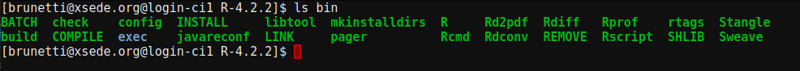
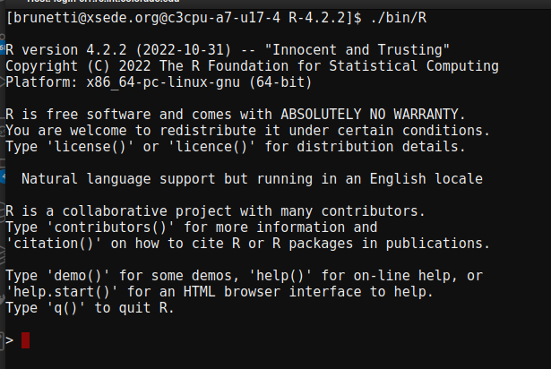
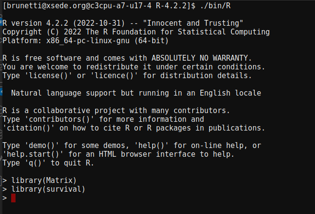

Install a local copy of R (recommended)¶
Install R¶
Request and start a compile node on Alpine
$ acompile
{kind=link}
Navigate to your /projects directory for installation, as $HOME will be too small for the installation in addition to library installs. You can create a new directory if you wish, as long it is within a subdirectory of your /project directory.
$ cd /projects/yourUserName
Run the following and make sure to list the exact version of R you want to install. In this example, I want to install R version 4.2.2. The following set of commands will download the version of R from CRAN and then unpack it in your directory.
module load jdk/1.8.0
export R_VERSION=4.2.2
curl -O https://cran.rstudio.com/src/base/R-4/R-${R_VERSION}.tar.gz
tar -xzvf R-${R_VERSION}.tar.gz
cd R-${R_VERSION}
{kind=link}
Configure R by running the following. Be sure to change the –prefix argument to where you want R to install in your /projects directory. In this example, I giving it the path to where my R diectory is located.
./configure --prefix=/projects/yourUserName/${R_VERSION} --enable-R-shlib --enable-memory-profiling
Finally, we can build R by calling the make command.
make
Testing your local R installation¶
Now that you have installed R, you should test it to make sure it works.
Notice that if you run the ls command you should now see several new directories. The two that are of importance are:
library
bin
{kind=link}
To see what libraries you have installed for this version of R, you can run the following command within your –prefix specified directory:
ls library
This will show you all the libraries you currently have installed.
To start your R session, you need to run your R executable which is located in the bin directory. To see where this is, again, change directores to where you installed R when you specified the –prefix command and run the following:
ls bin
You are looking for the R executable:
{kind=link}
Now let’s spawn off our R session by specifying the path to that executable within our installation directory:
./bin/R
You are now in an R session!
{kind=link}
Notice when we looked inside our library directory, we already had some libraries listed. To check that these work, let’s pick a library to load into our R session. For this example, I am going to load in the Matrix and survival packages into my running R session.
library(Matrix)
library(survial)
You will notice they load fine and now we can confirm your libraries and R session are properly installed and running.
{kind=link}
Install R packages¶
The installation of R packages should not be any different than when you run R locally.
Request and start a compile node on Alpine
$ acompile
Spawn off your R session:
./bin/R
Let’s try to load in a packages we don’t have install yet, such as tidyverse.
library(tidyverse)
Warning
Oops! You will see an error what it is not installed.
You can use the install.packages() function to install tidyverse as follows:
install.packages("tidyverse")
You will see a long thread of log lines and commands that is running. Let it run until the command prompt is returned.
You will notice, that for tidyverse the install failed because it has an R dependency called haven.
{kind=link}
Therefore, follow the recommendation to install haven:
install.packages("haven")
You should see it successfully installed, and now you can try to install tidyverse again:
install.packages("tidyverse")
Hopefully that succcessfully installs tidyverse.
You can check that tidyverse and its dependencies were sucessfully installed by loading the library into your R session:
library(tidyverse)
{kind=link}
AND
you can check that tidyverse is in your library directory like we saw previously after exiting the R` session and lising out the libraries in the library` directory.
ls library
{kind=link}
Placing R in your path¶
Tired of having to specify the full path to your `bin/R` executable location? YOu can place R in your path or specify the path temporarily (if you have multiple versions of R)
Temporarily specify R¶
Note
By using the temporary method listed here, you will always need to call the same export command call everytime you start a new shell session or want to use R in a batch script.
Instead of always calling R by using its full path (/projects/yourUserName/R-4.2.2/bin/R, or where ever the bin/R is located from your install), you can run the following command on your session and this will call R directly for the life of your session. i.e when you log out or spawn a new session or new job script you will need to run/add this command each time. This is useful, if you want to maintain multiple versions of R and R libraries in your environment:
export PATH=/projects/yourUserName/R-4.2.2/bin/:$PATH
Now, anywhere you navigate within the current session, you will be able to start R, just by typing:
R
Or if have a batch script, you can add that line to any batch script before your program calls R. For example:
#SBATCH --nodes=1
#SBATCH --partition=amilan
#SBATCH --account=amc-general
#SBATCH --time=01:00:00
#SBATCH --memory=10G
#SBATCH --log=myOutput%J.log
#SBATCH --eror=myOutput%J.err
export PATH=/projects/yourUserName/R-4.2.2/bin/:$PATH
Rscript myRscript.R
Permanently specify R¶
If you only want to maintain a single version of R, you can add the command above to your .bashrc `profile. Your `.bashrc profile is always located as a hidden file underneath your $HOME directory at ~/.bashrc.
Open your ~/.bashrc` and add the following, making sure to update the /projects/yourUserName/R-4.2.2/bin/ to match the location where your bin folder is located for your R install.
export PATH=/projects/yourUserName/R-4.2.2/bin/:$PATH
Save the file after updating.
Either log out of your current session and log back in OR type source ~/.bashrc in your current session to make sure the changes take effect.
Now when you type R any where on the command line or submit a batch job, it will automatically know where your R installation is without having to specify the full path.